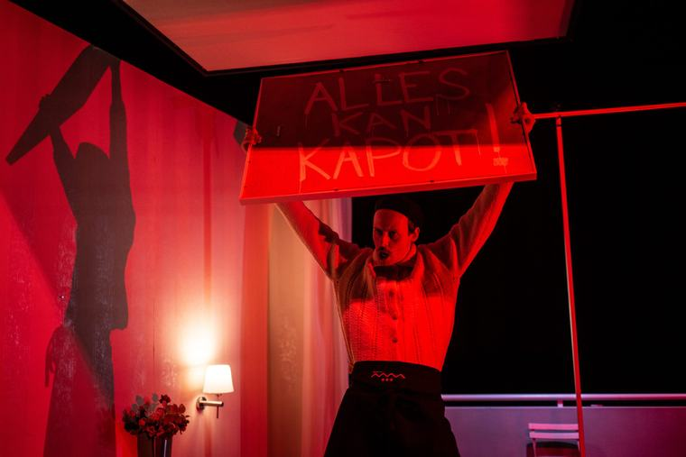
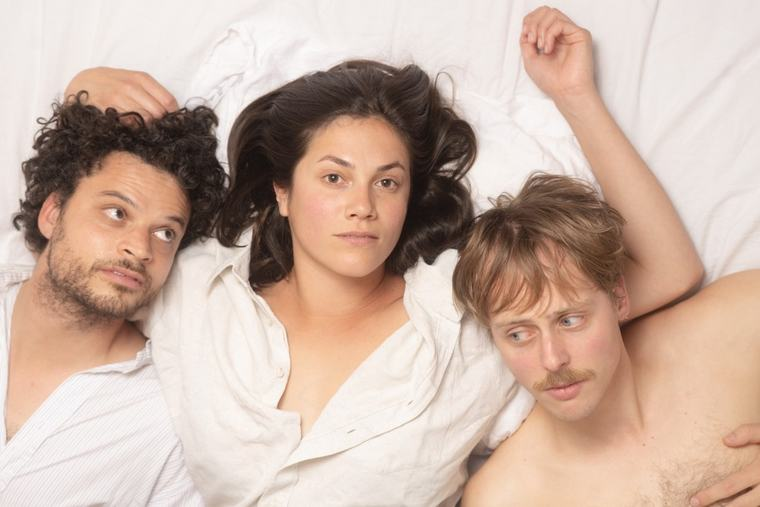
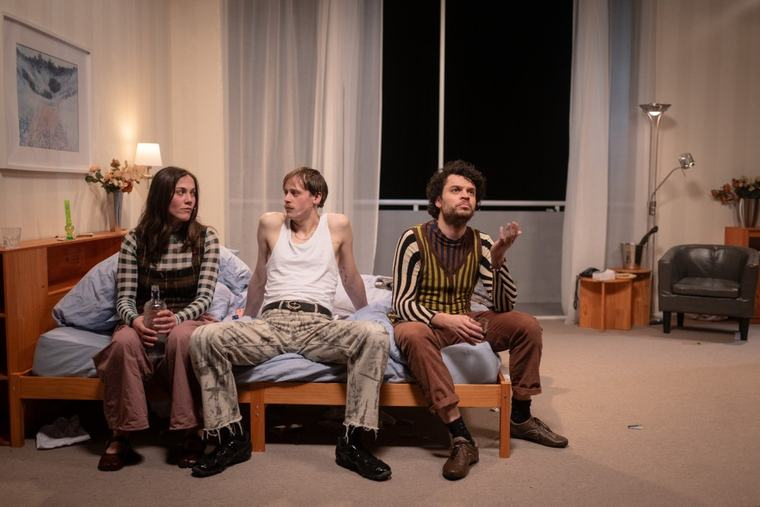
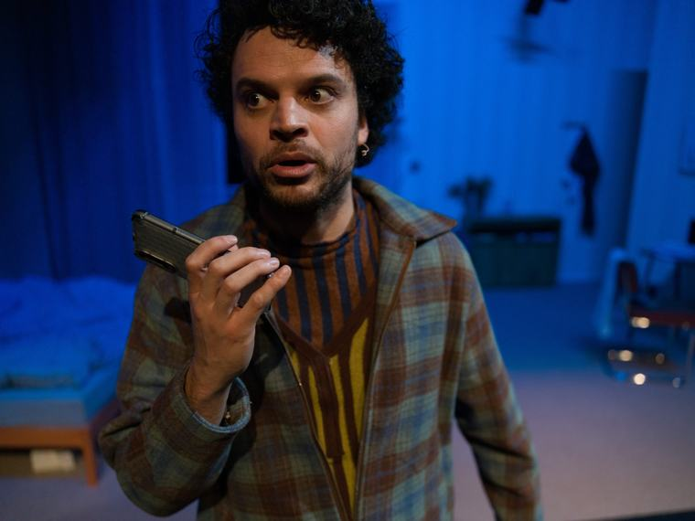
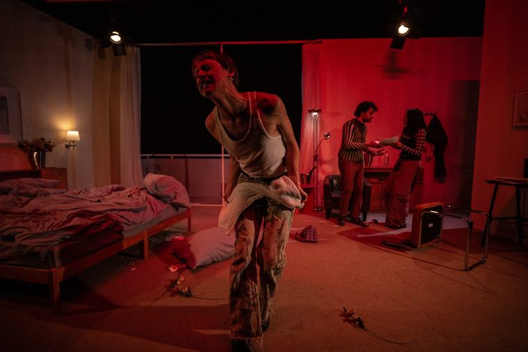
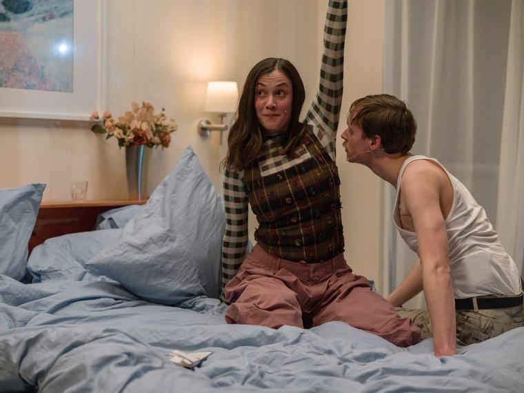
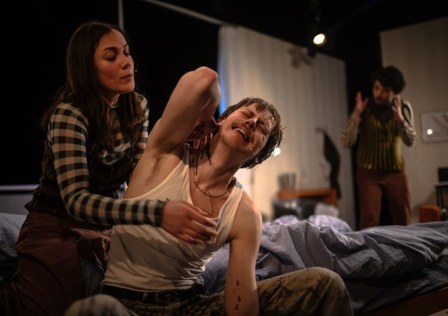
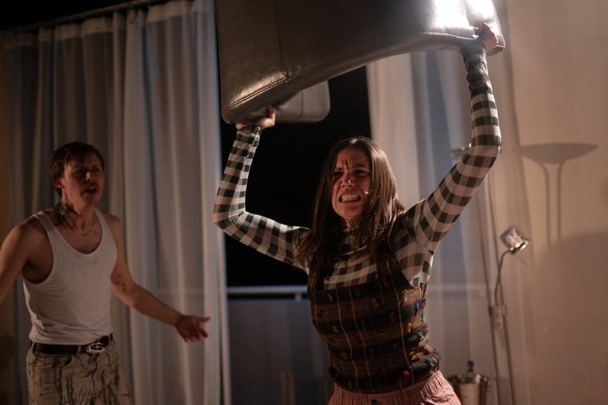
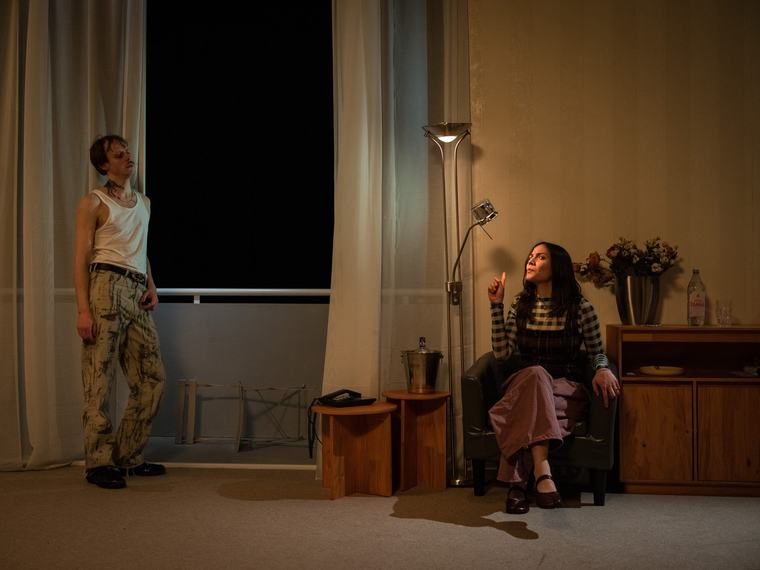
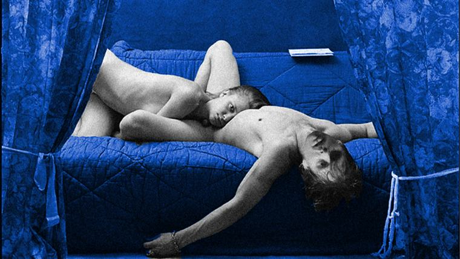

Herzschmerz

A love story to end all love stories. Antiklimax breaks up with romantic love in a show full of passion and cris de cœur, after Goethe's The Sorrows of Young Werther, Bertolucci's The Dreamers, countless other love stories. And Scarface.
Theatre maker Elias tries to save his collapsing production, and his life. He asks his old friend Lucinde to audition for the part of Lotte. What starts as an audition turns into a romantic Bermuda triangle, while outside the world is on fire. Is love their escape from reality, or will reality save them from love?
“Een over-de-top komedie met diep tragische elementen.”
“Heerlijke spelmomenten tussen Westera en De Roode, het plezier spat ervan af. De Sturm und Drang van Goethe krijgt alle glorie.”
“Een verrassende avond vol plotwendingen.”
“Echt ingenieus gemaakt.”
“Alle dramatische spanning [wordt] voortijdig onderuitgehaald door een grap of ongeloofwaardige wending.”

Credits
- concept & text
- Antiklimax
- direction
- Koen van Seuren
- performers
- David Westera, Mathieu Wijdeven, Pleun de Roode
- set & costumes
- Caz Egelie
- lighting design
- Bogi Bakker
- dramaturgy
- Luna Joosten
- production manager
- Annemarie Venema
- co-production
- Grand Theatre Groningen
- photography
- Niels “Knelis” Meijer
Performances
- 20 Feb 2026 premiere, Grand Theatre Groningen
- Feb–Apr 2026 tour: De Nieuwe Vorst Tilburg, Schuur Haarlem, Theater Kikker Utrecht, Zaal 3 The Hague, De Harmonie Leeuwarden, Theater Bellevue Amsterdam, Theater Walhalla Rotterdam, De Lieve Vrouw Amersfoort, Theater aan de Rijn Arnhem









photo: Niels “Knelis” Meijer